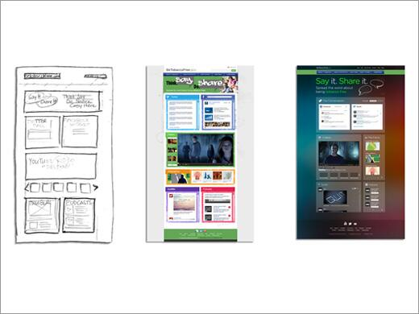

With the parallel design technique, several people create an initial design from the same set of requirements. Each designer works independently and, when finished, shares his or her concepts with the group. Then, the design team considers each solution, and each designer uses the best ideas to further improve their own solution.
Benefits of Implementing the Parallel Design Method
This process helps to generate many different, diverse ideas and ensures that the best ideas from each design are integrated into the final concept. Parallel design allows for:
- A range of ideas to be generated quickly and cost effectively.
- Several approaches to be explored at the same time, thus compressing the concept development schedule.
- Concepts generated to be combined so that the final solution benefits from all ideas proposed.

Best Practices of Parallel Design
When getting ready to exercise parallel design in your project, you should:
- Define which layouts to address
- Clarify the expectations regarding fidelity of the designs
- If using a team approach, be sure your teams have equivalent skills
- Establish the evaluation criteria
Once reviewed, designs should each be reviewed and then there should be time set aside to combine elements of each design into a final concept.
What the Research Shows
Seeing and trying others' designs improved final solutions: Parallel design works because each team member can generate ideas from seeing other team member’s designs. What teams find is that no matter how good the original interfaces were, everyone was improved. Team members quickly identify good design ideas and effectively integrate those ideas into their own designs.
Creating many designs produced better results: In a case study entitled Improving System Usability Through Parallel Design  (1996), Jakob Nielsen supported the value of parallel design (i.e., multiple designers working independently on interface designs). Case study results showed the improvement in measured usability from version 1 to 2 was 18 percent with traditional iterative design and 70 percent with parallel design. Nielsen restated these findings in a 2011 article as well.
(1996), Jakob Nielsen supported the value of parallel design (i.e., multiple designers working independently on interface designs). Case study results showed the improvement in measured usability from version 1 to 2 was 18 percent with traditional iterative design and 70 percent with parallel design. Nielsen restated these findings in a 2011 article as well.
McGrew Article on Parallel Design
McGrew (2001) published an article confirming the value of parallel design. He applied parallel design to develop an invoice reconciliation program interface. Designers included the project manager, team members from the software and hardware team, two subject matter experts, three users and McGrew (who is a human factors engineer).
The team worked independently and sketched a proposed design using paper and markers. Sketches were posted on the wall and reviewed. Participants then each sketched two additional designs. McGrew required that each new design include at least one idea from another person's design and an idea that no one had yet proposed.
After design review, the team began to agree on an optimal design fairly early in the process and were able to reach consensus on the final user interface before the end of the day. Team members considered 40 design alternatives before beginning the iterative process. Participants also responded immediately to good ideas.
References
- M. Walker, L. Takayama and J.A. Landay, High-fidelity or low-fidelity, paper or computer? Choosing attributes when testing web prototypes,Proceedings of the Human Factors and Ergonomics Society 46th Annual Meeting, September 29–October 4, 2002, Baltimore, USA, HFES, Santa Monica (2002), pp. 661–665.
-
Parallel Design method from Usability Net